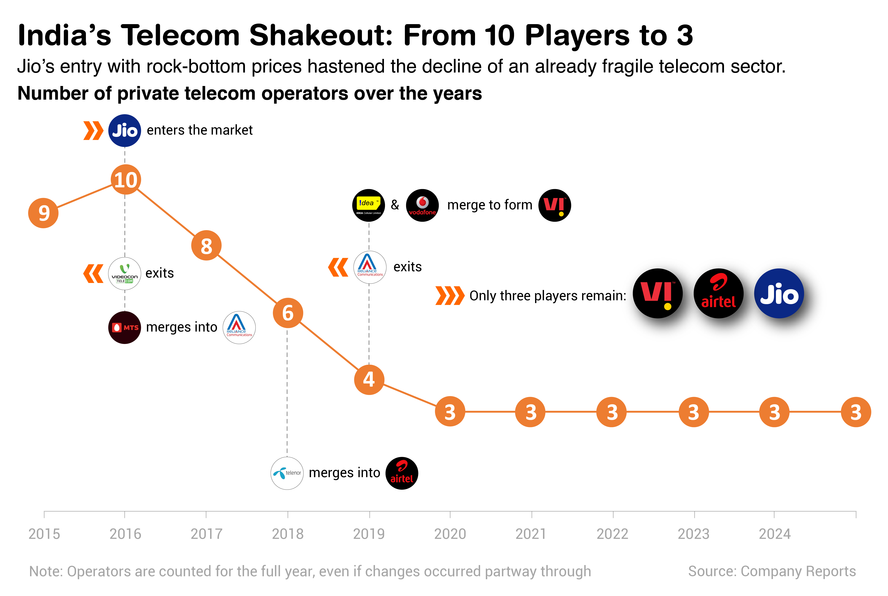

Built for this job application, this portfolio brings together graphic explanations made using Illustrator, Excel, Chart.js, and Flourish. It’s coded from scratch with basic HTML and CSS to keep things clean and functional. Telco mergers, rising digital ads, global vaccine rollouts — all charted and captioned here.
India’s Telecom Shake-Up
India’s telecom sector has seen a dramatic shake-up — from over 10 private players in 2016 to just three today. Even before billionaire Mukesh Ambani-owned Jio’s entry, operators were struggling with high spectrum costs, mounting debt, and policy uncertainty.
Jio’s arrival with free voice and dirt-cheap data tipped the balance. Unable to match its prices, many rivals shut shop or merged to survive. The result: a highly consolidated industry dominated by Jio, Airtel, and Vodafone Idea.
Shakeout — From 10 Players to 3
India’s telecom sector was already under stress from costly spectrum auctions, heavy debt, and policy uncertainty when Jio entered in 2016 with free voice and ultra-cheap data.
The resulting price war proved unsustainable for most operators. Some, like Telenor and MTS, merged into larger players; others, like Aircel and Videocon, shut down.
Even Vodafone and Idea, once major rivals, were forced to merge in 2018 to survive. A wave of exits and consolidations followed, leaving just three private players — Jio, Airtel, and Vodafone Idea — by 2020.

The chart shows how India’s telecom sector shrank from over 10 private operators in 2016 to just three by 2020.
The data was compiled from company reports, cleaned in Excel, and visualized using Adobe Illustrator.
TOOLS USED:
Microsoft Excel, Adobe Illustrator
How the Market Share Shifted
As smaller players exited, the market narrowed to a three-way contest. Vodafone and Idea merged in 2018 to counter Jio’s rise, but the combined entity — Vodafone Idea (Vi) — has struggled ever since.
Saddled with massive debt and limited funds to upgrade its network, Vi has steadily lost users.
Meanwhile, Jio and Airtel have expanded their subscriber base, with Jio leading the market and Airtel closing in as a strong second.
INTERACTIVE: Jio, Airtel eating into Vodafone's market share
The 2018 Vodafone-Idea merger failed to stem their subscriber bleed. Rivals Jio and Airtel have since gained users at the debt-ridden telco's expense.
Market share of Indian telcos since Vodafone-Idea merger
Source: Ambit Capital
The interactive chart tracks how the market share of Jio, Airtel, and Vodafone Idea evolved over time, using data sourced from Ambit Capital.
Built using Chart.js, it includes interactive features: when you hover over any point on the timeline, a tooltip appears showing the subscriber base of all three operators for that particular quarter. This allows for a more detailed and intuitive exploration of trends across the years.
TOOLS USED:
Microsoft Excel, Chart.js, HTML
Price Hikes and Their Impact on ARPU
India has long been one of the world’s lowest ARPU markets — a key factor behind the collapse of several telecom operators. Over the past six years, the surviving players have raised tariffs at three key intervals.
Each hike was followed by a noticeable uptick in ARPU within a quarter or two. While these revisions have helped shore up revenues, India’s ARPU still trails global norms, suggesting more hikes may be on the horizon.
This graphic illustrates how average revenue per user (ARPU) jumped following tariff hikes by telecom operators. The data, also from Ambit Capital, was prepared in Excel and designed in Illustrator.
TOOLS USED:
MIcrosoft Excel, Adobe Illustrator
Beyond Telecom: Media, Public Health
Not all trends unfold in the same lane. From changing advertiser priorities to the global rush for vaccines, the following charts spotlight how two very different sectors responded to disruption and urgency — one driven by market forces, the other by a global health crisis.
Digital Eats the Ad Pie
India’s advertising landscape has been steadily tilting toward digital. Once dominated by traditional channels like print and television, the ad revenue pie is now being reshaped by the rise of the internet.
As smartphone use surged and 4G/5G connectivity deepened, platforms like social media, online video, and search engines became advertisers’ preferred mediums. This shift has come at the expense of legacy formats — with newspapers and TV seeing their share shrink year after year.
Digital’s growing dominance signals a fundamental change in how businesses reach consumers in a mobile-first economy.
This chart captures the growing dominance of digital media in India’s ad market, as traditional platforms like print and TV lose share.
Data from Dentsu was processed in Excel and visualized in Illustrator.
TOOLS USED:
Microsoft Excel, Adobe Illustrator
An Unequal Start to Vaccination
Created in July 2021 for a COVID-19 story, this chart used data from Our World in Data to show how vaccination coverage varied widely across countries in the early rollout phase — reflecting gaps in access, infrastructure, and uptake.
This animated graphic shows the percentage of each country’s population vaccinated as of July 2021, during the early phase of the global rollout.
Data was sourced from Our World in Data, cleaned in Excel, and built in Flourish.